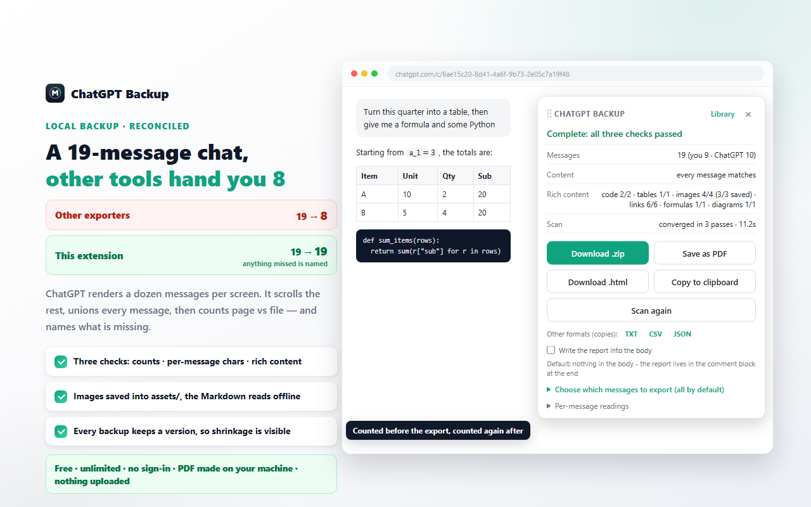
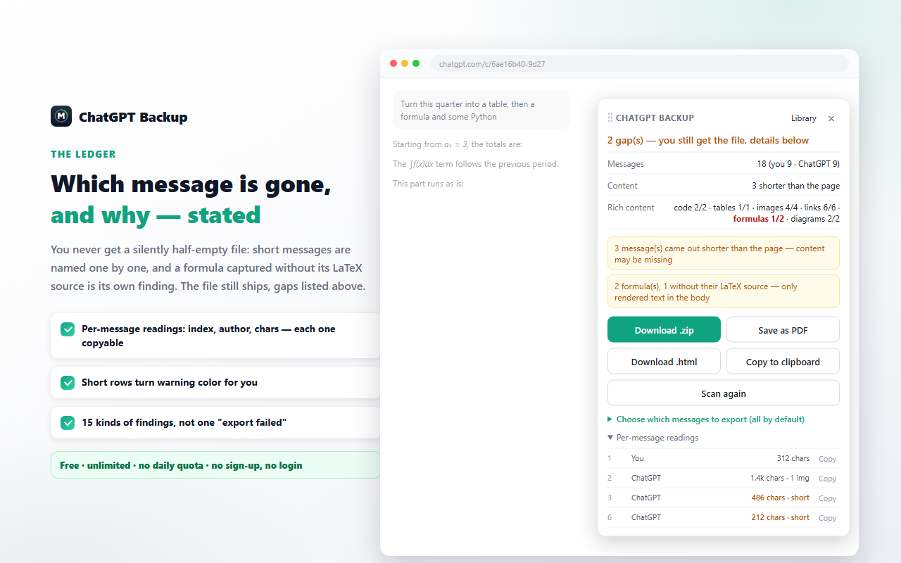
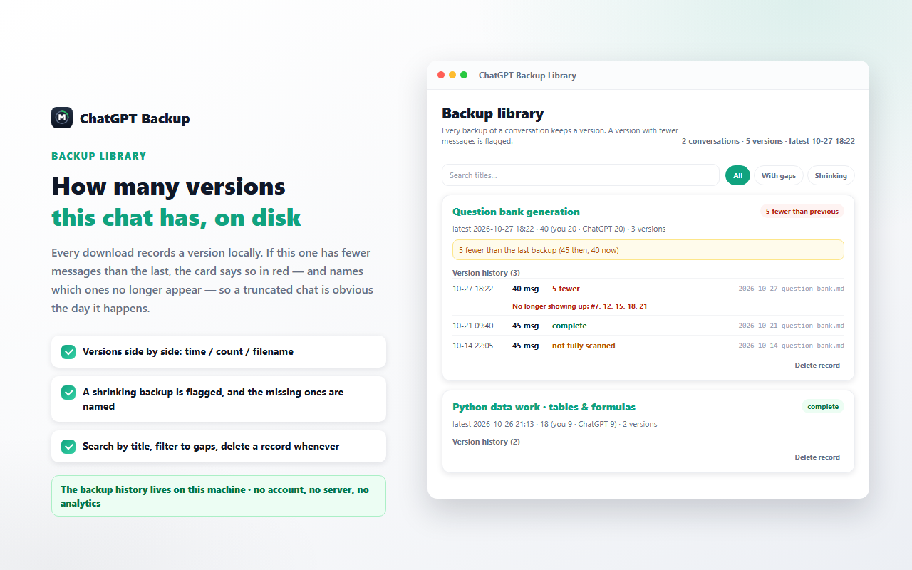
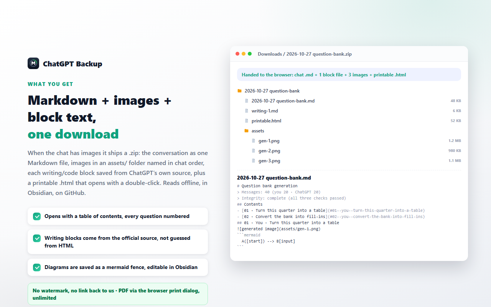

Back up the ChatGPT chat you are reading — and see what the file left out
ChatVault is a free browser extension for chatgpt.com. It scrolls the conversation you have open, collects every message the page has loaded, and writes one Markdown file. Then it counts what it wrote against what the page displayed — messages, characters, code blocks, tables, images, links, formulas, diagrams — and names anything that does not match. Nothing is uploaded, there is no account, and there is no server.
How to install See what the report looks like
Free · No account · No ads or analytics · Runs 100% locally

×A receipt, not a promise
Every export tool says the file is fine. This one shows you the arithmetic behind that claim, in three layers, before and after the file is written.
Messages
How many messages the page showed, how many were written, and how the question and answer counts line up.
Content
The character count of each message, page versus file. A reply that came out shorter is flagged instead of quietly shipped.
Rich content
Code blocks, tables, images, links, formulas and diagrams counted on both sides, so a lost table or a formula without its LaTeX source is a reading, not a guess.
Gaps are named
When a number disagrees, the panel says which message, who said it, and both character counts. The file still ships — you decide what to do about it.

What ends up on your disk
The conversation is the point, so the boring parts are handled: long chats, generated images, writing blocks, diagrams.
Long, virtualized chats
ChatGPT keeps only a handful of messages in the page at a time. The scan scrolls through the conversation and unions every message it sees by id, stopping only when two full passes add nothing new.
Generated images travel with it
Images are fetched from the page itself and packed into the .zip as assets/gen-1.png, next to the Markdown and a printable page.
Writing blocks keep their source
When the page carries the block's own Markdown copy text, that text is what gets saved — headings, lists and tables keep their structure instead of being reconstructed from the screen.
Diagrams keep their source
Diagram source found on the page is written into a fenced block you can edit and re-render. When no source is available, the text drawn in the diagram is kept and the report says so.
A library on your machine
Each backup is recorded as a version of that conversation — time, message counts, and the id list used to spot what disappeared since last time. Search it, filter it, delete a record. Nothing is removed automatically.
Five ways out
Download .md (a .zip when the chat has images), save as PDF through your browser's print dialog, download a printable .html, copy the body to the clipboard, or take a plain-text / CSV / JSON copy.
How it works
From an open conversation to a file on your disk in three steps.
- 1
Open the conversation
A vertical tab appears on the right edge of the page. Click it, or press Alt+B. The panel opens in place and can be dragged anywhere.
- 2
The panel scans
It walks the conversation, collects messages by id and stops when two passes add nothing. A running line shows the pass number and the message count so far.
- 3
Read the report, take the file
The report shows the three layers. Download .md, or the .zip when the chat has generated images. If anything is off, it is listed above the buttons.
In action
What the library and the downloaded folder look like. These are illustrations of the interface, not screen captures.


What it deliberately does not do
A short list, because a tool that claims everything is the tool that loses your chat.
It cannot invent what the page never rendered
If a message was never loaded, or the reply was already empty when you asked, there is nothing to save. The report says which message it was instead of writing a placeholder that looks like content.
Code-block languages may be blank
The page does not expose the language tag on highlighted code, so fenced blocks can come out without one. The reading shows how many blocks were unlabelled.
Formulas can lose their source
When the page only offers the rendered formula and not its LaTeX, the file keeps the rendered text and the report counts it as a gap.
No account-wide crawling
It reads the conversation you are looking at. It does not page through your history, run on a schedule, sync to a cloud, or call an internal API — read-only, on the page in front of you.
Install
ChatVault is installed from the browser's own store — there is no separate installer to download, and no account to create.
Chrome Web Store
The listing is being submitted for review, so there is no store button on this page yet. Once it is live, the button here will open the Chrome Web Store listing directly.
Microsoft Edge Add-ons
Planned as a second listing from the same package. Edge also runs Chrome extensions, so the Chrome listing works there too once available.
Requirements
Chrome 111 or newer, and the conversation open on chatgpt.com. The only permission requested is local storage.
Frequently asked questions
How do I export a ChatGPT conversation to Markdown?
Open the conversation in your browser, then click the vertical tab on the right edge of the page or press Alt+B. The panel scans the messages the page has loaded, shows its report, and hands you one Markdown file. No links to copy, no separate website, and the extension never calls an internal API.
Why do other export tools save only part of a long conversation?
ChatGPT renders a conversation as a virtualized list: only a handful of messages exist in the page at any moment. A one-shot scrape therefore saves what happens to be on screen. ChatVault scrolls through the conversation, collects the union of every message it sees by message id, and keeps going until two full passes add nothing new.
Does it work with a free account?
Yes. It works with any conversation you can open in the browser. The extension does not read account details, does not ask for a password and does not use an API key.
What does the report actually check?
Three layers. Messages: how many the page showed and how many were written. Content: the character count of each message, page versus file. Rich content: code blocks, tables, images, links, formulas and diagrams on both sides. When a number disagrees the file is still delivered, and the difference is named — which message, who said it, and both character counts.
How do I export only some of the messages?
Open Choose which messages to export at the bottom of the panel and untick what you do not need. The status line switches to a partial export and the file name carries the selection. A partial export is deliberately not recorded in the local library, so it can never become the baseline for the next comparison.
Where are my files and my data?
The .md and .zip land in your normal Downloads folder. The built-in library keeps only metadata — time, message counts, file name and the message id list of that version — in your browser's local storage on your own machine. Nothing is uploaded: there is no server and no analytics. The only permission requested is local storage, and the extension runs on chatgpt.com and chat.openai.com and no other site.
Is it really free?
Yes: no account, no daily quota, no ads, no analytics and no paid tier. PDF is produced by your own browser's print dialog, so it does not depend on a second service.
中文说明
ChatVault 是一个免费的浏览器扩展，只在 chatgpt.com 上运行。它会把你当前打开的对话滚一遍，按消息 id 取并集，把页面已经加载出来的每一条都收进来，写成一份 Markdown；然后把「写进文件的」和「页面上显示的」各数一遍——消息条数、每条字数、代码块、表格、图片、链接、公式、图表——对不上的地方逐条点名，而不是让文件看起来"像是成功了"。不上传、不注册、没有服务器。
三层对账
消息数 / 每条字数 / 富内容，导出前后各数一遍；少了哪条、是谁说的、两侧各多少字，写在面板上。
长对话不漏
页面同一时刻只挂少量消息；扫描边滚边收，连续两轮没有新内容才算扫完。
生成图与写作区块
生成图跟着 .zip 一起走（assets/gen-1.png）；写作区块存页面自带的 Markdown 原文，标题列表表格都不塌。
图表保留源码
取得到就把图的源码写进可编辑的围栏；取不到就保留图上文字，并在读数里写明这样的有几张。
本机备份库
每次备份记一版（时间、条数、那一版的消息 id 清单），可搜可筛可删；满了只提示你自己删，不会自动删任何记录。
五种拿走的方式
下载 .md / .zip、存为 PDF（走浏览器打印）、下载可双击打开的可打印页、复制到剪贴板，另有纯文本 / CSV / JSON 副本。
怎么把一条 ChatGPT 对话导出成 Markdown？
在浏览器里打开那条对话，点页面右边缘的竖排按钮，或按 Alt+B。面板自己开始扫描，扫完把对账单列在上面、把 .md 给你。不用复制链接、不用另开网站，也不会去调内部接口。
为什么别的导出工具会漏掉长对话里的消息？
因为 ChatGPT 的对话是虚拟化列表：同一时刻页面里只挂着少量消息，抓一次只能拿到屏幕上那几条。我们的做法是滚动取并集，连续两轮都没有新消息才算扫完。
免费账号能用吗？
能。只要这条对话你能在浏览器里打开。扩展不读账号信息、不要密码、不需要 API key。
文件和数据存在哪？
.md 和 .zip 存在你自己的下载目录。备份库只存元数据（时间、条数、文件名、那一版的消息 id 清单），存在浏览器本地存储里。不上传、没有服务器、没有统计；唯一的权限是本地存储，只在这个对话站点上运行。详见隐私政策。
免费 · 无需注册 · 无每日配额 · 完全本地运行